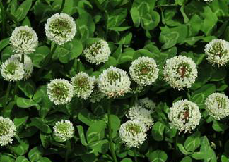

Specie: Trifolium repens
Taxonomy: Fabaceae; Papilionoideae; 50 kb inversion clade; NPAAA clade; Hologalegina; IRL clade; Trifolieae; Trifolium
Abbr: Tre
Level: Chromosome
chromosome number: 2n=2X=16

Introduction: Trifolium repens, the white clover, is a herbaceous perennial plant in the bean family Fabaceae (otherwise known as Leguminosae). It is native to Europe, including the British Isles, and central Asia and is one of the most widely cultivated types of clover. It has been widely introduced worldwide as a forage crop, and is now also common in most grassy areas (lawns and gardens) of North America, Australia and New Zealand. The species includes varieties often classed as small, intermediate and large, according to height, which reflects petiole length. The term 'white clover' is applied to the species in general, 'Dutch clover' is often applied to intermediate varieties (but sometimes to smaller varieties), and 'ladino clover' is applied to large varieties. It is a herbaceous, perennial plant. It is low growing, with heads of whitish flowers, often with a tinge of pink or cream that may come on with the aging of the plant. The heads are generally 1.5–2 centimetres (1⁄2–3⁄4 in) wide, and are at the end of 7 centimetres (2+3⁄4 in) peduncles or inflorescence stalks. The flowers are mostly visited by bumblebees and often by honey bees. The leaves are trifoliolate, smooth, elliptic to egg-shaped and long-petioled and usually with light or dark markings. The stems function as stolons, so white clover often forms mats, with the stems creeping as much as 18 cm (7 in) a year, and rooting at the nodes. The leaves form the symbol known as shamrock. Almost always, a white clover will be trifoliolate. However, one can, but only sometimes, possess four or more leaflets.
Distribution: Afghanistan, Albania, Algeria, Altay, Austria, Azores, Baleares, Baltic States, Belarus, Belgium, Bulgaria, Buryatiya, Central European Rus, Corse, Czechoslovakia, Denmark, East Aegean Is., East European Russia, East Himalaya, Egypt, Ethiopia, Finland, France, Føroyar, Germany, Great Britain, Greece, Hungary, Iceland, India, Iran, Iraq, Ireland, Irkutsk, Italy, Kazakhstan, Kenya, Kirgizstan, Krasnoyarsk, Kriti, Krym, Lebanon-Syria, Madeira, Mongolia, Morocco, Nepal, Netherlands, North Caucasus, North European Russi, Northwest European R, Norway, Pakistan, Palestine, Poland, Portugal, Romania, Sardegna, Sicilia, South European Russi, Spain, Sweden, Switzerland, Tadzhikistan, Tanzania, Transcaucasus, Tunisia, Turkey, Turkey-in-Europe, Turkmenistan, Tuva, Ukraine, Uzbekistan, West Himalaya, West Siberia, Yugoslavia, Zimbabwe
Article Title: Breaking Free: The Genomics of Allopolyploidy-Facilitated Niche Expansion in White Clover
Data source: Original sequence data from this article can be found in the EMBL/GenBank data libraries with the following accession numbers.